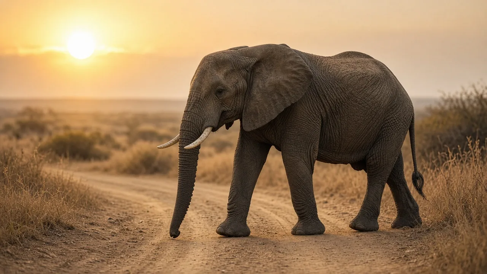

Why can elephants walk so quietly?
Elephants can walk surprisingly quietly because thick, specialized pads beneath their feet spread their weight and cushion each step. The pads help absorb impact even though elephants are extremely heavy.

The secret is under the foot
An elephant looks too large to move quietly, yet its feet are built to cushion enormous loads. Smithsonian's National Zoo explains that elephants walk on their toes above thick, fibrous pads. Those pads absorb shocks and protect the bones as the animal moves. Zoo Atlanta also describes the pad spreading as the foot bears weight, helping the animal step quietly.
Quiet does not mean silent in every setting. An elephant can break branches, shuffle gravel, or splash through water. The point is that the contact between foot and ground is much more cushioned than a hard, rigid hoof striking a surface. Its anatomy makes controlled walking possible despite its size.
What is inside an elephant foot pad?
The pad is not a hollow air pocket. Anatomical research on African elephants found a complex arrangement of fatty compartments, fibrous connective tissue, and supporting structures beneath the bones. The researchers described these cushions as helping distribute forces and absorb or store mechanical energy during weight bearing.
The study also identified nerves and sensory structures in the pads. This matters because elephant feet are not merely passive supports. They are living tissues involved in contact with the environment. A thick exterior can coexist with sensitive internal structures, just as a person can have a tough sole and still feel pressure through the foot.

How each step spreads the load
As an elephant puts weight onto a foot, the soft pad deforms and distributes force across a broad area. When the foot lifts, the pad changes shape again. Zoo Atlanta explains that the foot's circumference can decrease as it rises, reducing suction from the ground. This is useful on soft or wet surfaces.
The process is not the same as walking on pillows. A pad must be strong enough to bear substantial loads without collapsing, while remaining flexible enough to spread pressure. Researchers describe a network of connective tissue around fatty compartments, a structure that helps achieve both functions. The rest of the leg and the animal's walking pattern also contribute to stable movement.
Do elephants really walk on their toes?
In a skeletal sense, elephants support themselves on digits rather than placing their bones flat against the ground like a human bare foot. Smithsonian and Zoo Atlanta both describe this unusual arrangement. The visible foot looks broad and column-like because soft tissue and skin surround the internal bones and cushions.
That distinction helps explain why elephant toenails are not equivalent to a horse's weight-bearing hoof. The pads and other tissues take much of the load. It also explains why an elephant foot can look relatively simple from the outside while containing an intricate support system inside.
Why healthy feet matter
Foot trouble can affect an elephant's ability to walk comfortably. Zoo Atlanta describes regular checks and foot care for elephants in its care, including attention to nails and pads. The peer-reviewed anatomical study also notes the importance of understanding foot structures when dealing with foot disorders.
Good management involves suitable surfaces, opportunities for movement, and professional monitoring in human care. Wild elephants encounter varied ground as they travel. Neither setting makes feet invulnerable. Their remarkable cushions are adaptations to heavy walking, not a guarantee against injury or disease.
What the science adds to the familiar picture
From a distance, an elephant's leg looks like a solid pillar. The anatomical study of African elephant foot cushions reveals a more dynamic system: tissues deform under load, and internal structures help distribute that load. This is an important reminder that large animals do not simply rely on oversized versions of human bones. Their bodies have specialized arrangements to solve the challenges of their weight and movement.
Research on pressure distribution in Asian elephant feet further shows that pressure is not uniform across the sole. How an elephant loads different regions of its foot is a complex matter involving both tissues and movement. This makes the simple claim that an elephant walks on a soft pad broadly helpful, but not a complete account of the biomechanics.
Frequently asked questions
Is quiet walking normal for elephants?
Yes. Cushioned feet are a characteristic part of elephant biology, although unusual changes in gait or signs of foot injury deserve separate attention.
Does every elephant walk exactly the same way?
No. Individuals differ, and their behavior changes with the environment, activity, and circumstances. Avoid judging an animal from a single photograph or brief encounter.
Can elephant feet be understood without their habitat?
Not completely. Body structures and behaviors make more sense when considered alongside the places animals live and the challenges they face.
What is the most important thing to remember?
Focus on the well-supported explanation rather than a dramatic myth: thick, fibrous foot pads spread the load and cushion each step.
Sources
- Smithsonian's National Zoo and Conservation Biology Institute: Asian elephant
- Zoo Atlanta: Specialized walkers
- Weissengruber, G. E., Egger, G. F., Hutchinson, J. R., et al. (2006). The structure of the cushions in the feet of African elephants (Loxodonta africana). Journal of Anatomy 209(6): 781 to 792. DOI 10.1111/j.1469-7580.2006.00648.x
- Panagiotopoulou, O., Pataky, T. C., Hill, Z. and Hutchinson, J. R. (2012). Statistical parametric mapping of the regional distribution and ontogenetic scaling of foot pressures during walking in Asian elephants (Elephas maximus). Journal of Experimental Biology 215(9): 1584 to 1593
Cite this page
APA
TuskWise. (2026, November 9). Why can elephants walk so quietly? https://tuskwise.com/blog/why-can-elephants-walk-so-quietly.html
MLA
“Why can elephants walk so quietly?” TuskWise, 9 Nov. 2026, tuskwise.com/blog/why-can-elephants-walk-so-quietly.html.
Chicago
TuskWise. “Why can elephants walk so quietly?” TuskWise. Last modified November 9, 2026. https://tuskwise.com/blog/why-can-elephants-walk-so-quietly.html.